In this blogpost, we will discuss how we leveraged a capsule network to serve as the discriminator in a Generative Adversarial
architecture. We use our model on a variety of similar datasets in the MNIST family, hoping that the vector activations
produced by a capsule network will be able to provide more nuanced feedback to the generator, and thus lead to improved
generated images. We are especially interested in transformed and rotated images, which capsule networks perform
particularly well with. We achieve significant improvements over the baseline model of a deep convolutional
GAN. To further our analysis, we pinpoint certain areas in the latent space in which certain image transformations or patterns arise. Our code is located here.
Two recently popularized, innovative models are GANs (Generative Adversarial Networks)
, and CapsNets (capsule networks)
. In this paper, we will explain how we integrate the two into a CAPSGAN.
The strength of a Capsule Network lies in its dynamic routing capabilities, which direct the output of a neuron based on
its cosine similarity with other neurons. Capsule networks also internally represent objects as vectors, providing far more
expressive power than a traditional CNN. This representation also allows for rotational invariance, which we test against a
rotated MNIST dataset.
Generative adversarial networks are a model used to generate images from a learned distribution. They are composed of two
components: a generator that learns to generate images given a vector sampled from the latent distribution, and a discriminator
that learns to discriminate between generated images and real ones from the dataset. The two components of this model
play a minimax game, by the end of which the generator is able to generate images from the data distribution by randomly
sampling from the latent space. Traditionally, architectures such as a deep convolutional neural network are used for
both components, but we propose using a capsule network for the discriminator.
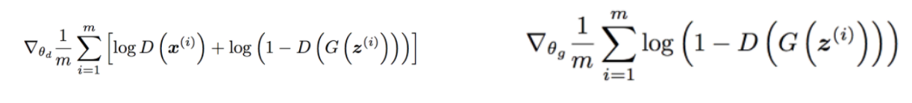
The generative adverserial network gets its name from the minimax game that the generator and discriminator play as they try to learn the true data distribution.
CapsNet
Capsule networks
are a recent development that addresses some of the weaknesses of traditional
convolutional neural networks. In this model, each capsule is responsible for a region of the input, and outputs an array
of values representing it. By using vectors activations rather than scalars, capsules are able to send much more information onto the next layer about the kinds of features captured in the image. Both the direction and magnitude of the vector contain important information about the features. Capsule networks also use a different kind of non-linearity then traditional CNN's called squashing,
which scales the vector so that it's magnitude denotes a probability value. Because a capsule contains many pieces of
information about a location, a procedure called routing determines what is sent up to the next layer based off what
is believed to be more important.
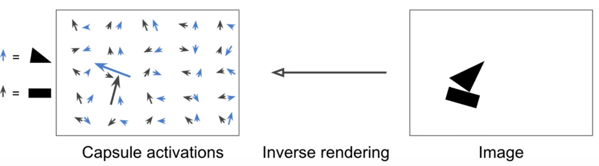
Visualization of how capsule networks represent entity-level information. In this case, the arrow direction represents the rotation of the shape (generally some entity parameter) and the magnitude (max 1) represents the strength of the prediction at that particular location
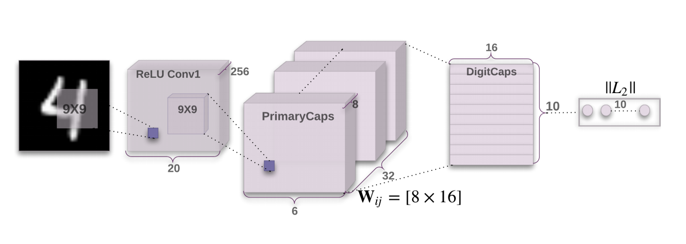
The MNSIT capsule network consists of a convolutional layer, followed by a 8 x 1152 "PrimaryCaps" layer (which routes to itself three times), followed by a single 16 x 10 "BinaryCaps" layer, where each row corresponds to one of the 10 digits, and each column to some entity feature.
Our approach
Data
We chose to investigate the nuances of capsule representations by focusing on various variations of the MNIST dataset. These
included:
-
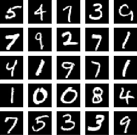
MNIST examples
Original MNIST, which we obtained through the built-in PyTorch TorchVision dataloader.
-
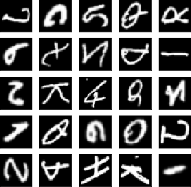
EMNIST examples
Extended MNIST (EMNIST) which contains both letters and numbers, each of which is rotated randomly, and for which we
also utilized the TorchVision dataloader.
-
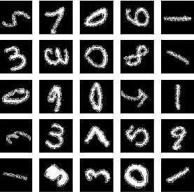
Rotated MNIST examples
Rotated MNIST, which we created ourselves by applying a random rotation between 0 and 360 degrees to the MNNIST dataset. Note that the rotation process did introduce a border artifact to the images
Our hope was that, by looking more deeply into these similar datasets, we would be able to discern more detailed learning
points than if we simply obtained proof-of-concept results on a larger breadth of datasets.
Baseline
We chose to also perform the same experiments using the Deep Convolutional Generative Adversarial Network (DCGAN)
developed by Radford et.al. as a baseline. This GAN has a very similar architecture to ours, the difference
of emphasis being that its discriminator utilizes a deep convolutional network instead of a capsule network.
 DCGAN architecture
DCGAN architecture
Model
In our implementation, we propose replacing the discrimination component of the GAN with a CapsNet. CapsNets have been
shown to have remarkable classification properties, which we leverage in the training process for the generator. This
increased scrutiny on the generator results in more robust and impressive images. For the generator, we used the same
model as the DCGAN but make numerous architectural changes we felt would help the generator as well as in regards to
outputting a 28x28 image rather than a 64x64 one that it originally generated. We tried out different layers in which
to add a singular Mean Pooling Layer, finally settling on the last layer as that yielded the best results. For the discriminator,
we modified a CapsNet originally used for MNIST classification so that rather than outputting the probabilities an image
belonged to one of the ten labels, there is a single output vector whose magnitude is the probability of the image being
real or generated. The squash activation at the end ensures the output can be used as a probability measure, and thus
our discriminator could be plugged into our GAN model.
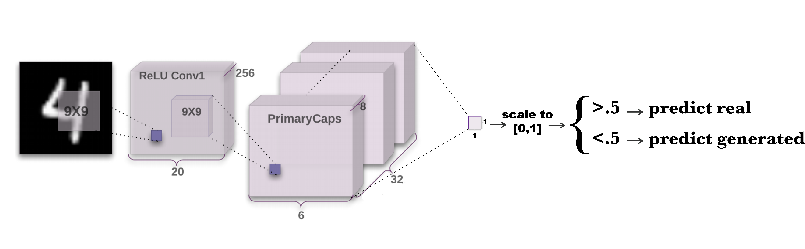
Our first model, which reduced the DigitCaps layer to a scalar output, which was then used for classification.
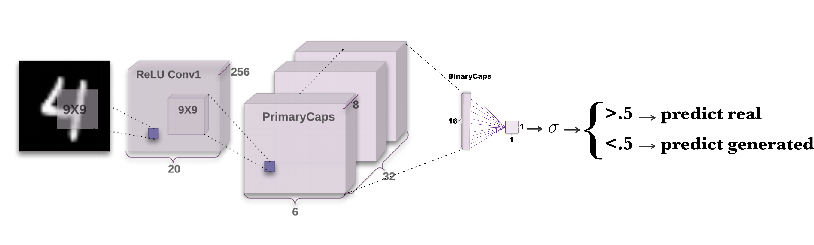
Our second model, which replaces the 16 x 10 DigitCaps layer with a 16 x 1 BinaryCaps layer followed by a single fully connected layer, the output of which is sigmoided and used for classification.
Results
Qualitative
Our trained generator was able to generate good looking images for all three of our datasets. Note that the borders on the rotated mnist digits resulting from the rotation were actually learned as well, and are not a result of poor generation in the rightmost image.
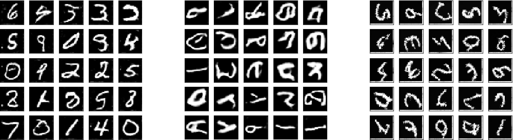
Sample generated by our CapsGAN for MNIST (left), EMNIST (center), and Rotated MNIST (right)
Training
When training our models, it often took us a couple starts so that we wouldn't end up with a model that suffered from mode collapse. This is due to the large impact we found seeding and initialization to have. It was unfortunate that this wasn't clear until a couple epochs in, so it was a little tedious during the training process.
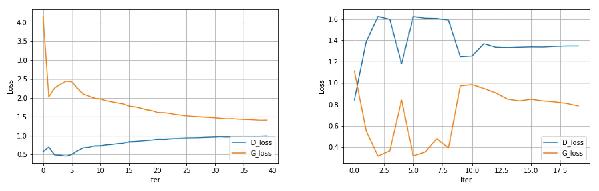
The Discriminator and Generator training losses for training on MNIST (left) and E(xtended)MNIST (right)
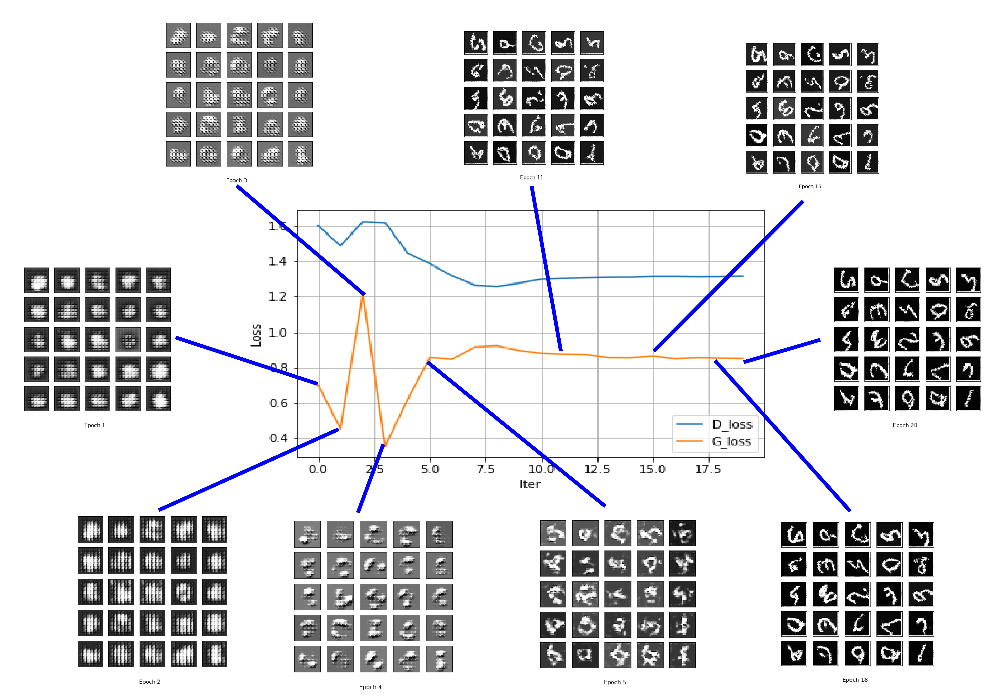
The loss of our Capsule discriminator and convolutional generator plotted alongside the generated images at the time
Quantitative
We also evaluated the strength of our GAN with the Generative Adversarial Metric proposed by Im et. al.
On the regular MNIST dataset, our network has an r_samples score of 0.0 and an r_test score of 1.4815. What this means is that our discriminator classifies every single one of the baseline generator's generated images as fake, which is very impressive of our capsule discriminator. However, while the baseline discriminator classifies all of the real images as real correctly, our capsule discriminator classifies a smaller 67.5% as real, which is worse. Our capsule discriminator is more stingy in terms of classifying images as real as opposed to generated, which could be due to the way we trained our capsule discriminator that caused it to be stricter.
Experiments
Running with Different Steps
Other things we tried out to train better images, in addition to the extensive architecture and hyperparameter tuning discussed above, include running the generator and discriminator for different amounts of steps. The intuition behind trying this was we realized that because we are using a capsule net as a discriminator rather than a more simple convolutional network, our discriminator might be more powerful than our generator, and thus rather than training in parallel with the generator, might outpace it leading to poor images. To resolve this, we tried training our generator for n steps to every 1 of the discriminator's, however we found that this didn't work very well as this led to quick mode collapse. Thus, most of our results actually came from just running 1 step on each model in pace with each other, because we used a vanilla-enough capsule network as the discriminator that it was able to be trained in parallel to the generator. Neither model “outpaced” the other, so the feedback was never saturated.
Possible Rotational Advantages
Another thing we tried to see if we could isolate the effects of the capsule network as a discriminator over a convolutional network as one was taking the discriminators from both models trained on regular MNIST, and running them against test images from the rotated MNIST dataset, hoping to see if the CapsGan discriminator would classify them as real, whereas the DCGAN discriminator would classify them as fake because the convolutional layers were unable to deal with the rotational invariance. However, this did not work as expected because both discriminators classified all of the images as fake. However, this may be because the rotated images seem to have a sort of blur around the edges, due to the fact that rotation of a 28x28 image does not cause the images to remain as smooth as they did before. Just from viewing the MNIST dataset regular and rotated, one can spot the difference, so we hypothesize that the discriminator is unable to deal with the rotation for this reason, rather than a lack of rotational invariance.
Visualization -- Generator
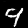
Notice the left vertical portion changing
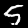
See how the entire figure goes from sharp to curved
We were interested in invesitgating how the capsule discriminator impacted the non-capsule generator's data representation. By perturbing a particular index of our latent vector, we were able to visualize how values at that index affected the output image.
The following gifs were created from the generator output of a fixed latent vector, with one index changing across the range [-1,1]. We were hoping to discover features representing information characteristic of a capsule representation, and notably different from that learned by a DCGAN.
Indeed, the results we in line with that hope. This first gif shows an input feature that corresponded to the length of the left leg of a 4.
 Manipulation of loop size of 6
Manipulation of loop size of 6
This next one has an affect on how sharp the corners of a 5 are.
One other example is this one, where changing a single index effects how large the lower loop of a 6 is. At the most extreme it is non-existent,
and at the other it is clearly a 6.
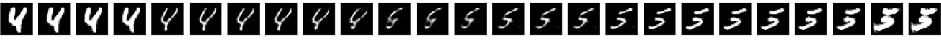
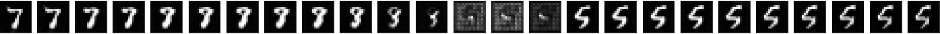
Here we can see two similar gifs unrolled. The top sequence is generated by the generator trained against our capsule disriminator, while the lower sequence is from by a standard DCGAN generator we trained using the same framework and number of epochs.>
The unrolled example above, however, is the most enlightening, as it distinctly shows a capsule-like representation much different from a DCGAN result. The varying of the feature, rather than causing somewhat smooth movement between two decent-looking numbers as is seen in the DCGAN case, seems to correspond to the stroke heaviness of the number. At either extreme we see very heavy numbers, which become lighter with a less extreme feature value (-1 and 1 are at the extremes), eventually switching classes in the middle. This is in line with Hinton's explanation of capsule networks in his original paper , where he found a single capsule feature to correspond to various image features, like rotation, skew, stroke, etc. Interestingly, even though the generator does not contain any capsules itself, we can see that our CapsGAN generator has learned a representation characteristic of capsules.
As an aside, it is also interesting to note that in this test we uncovered a latent space vector which our fully trained DCGAN generator mapped to a meaningless checkerboard pattern. This is something that we discovered in the training of our capsule net; in the early epochs of some runs, our generator would always output results looking like those middle cells. We attributed this to a combination of mode collapse and particularly non-robust instantiation requirements. It is nice to see that the DCGAN also struggles with this, and is unable to eliminate these "failure pockets" from the latent space entirely (we checked 40 input features and never encountered this problem with our fully trained CapsGAN)
All of our unrolled GIFs can be viewed here for CapsGAN, and here for DCGAN. 20 of the 100 input dimensions are represented in these disgrams.
Visualization -- Discriminator
We also created a little dataset of our own to see if we could isolate the features within the capsule discriminator that represent certain parameters of the input digit, like rotation, skew, scale, translation, stroke thickness, and stretch. For example, we created 7 different images of the same 4, but with various degrees of rotation.
Here are some of the image sequences we made to test:
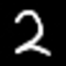
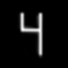
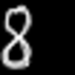
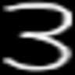
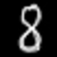
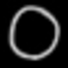
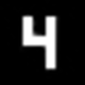
While our Capsule Discriminator was performing a forward pass on each of these images, we extracted:
- The PrimaryCaps layer, which is of dimension 8 x 1152, and is the second layer of three in the discriminator, but the first capsule layer.
- The DigitCaps layer, which is of dimension 16, and is the third and final layer in the capsule network in the discriminator.
One of the features of capsule networks is that the activation vectors have magnitude equal to 1, regardless of the dimensionality. Thus, in the 9216 dimensional PrimaryCaps vector, most of the components were very small. This is one of the colloquially named "curse of dimensionality", whereby most components of a vector go to 0 as the dimension of the vector increases and the magnitude is kept constant.
The most relevant components would have higher values than the rest, so we wanted to isolate them. We zero’d all components whose values were less than 60% of the max value and more than 60% of the (negative) min value for the entire capsule network. This isolated components whose activations were most relevant.
Then, to find which components map to which features, we visualized the PrimaryCaps layer as a 96 x 96 image, and the DigitCaps layer as a 16x1 image, and looked at the difference between the capsule activations of 2 images with varying degrees of the same transformation. For example, subtracting the capsule activation for a 4 with 45˚ rotation from the activation of a 4 with 0˚ rotation yields the following:
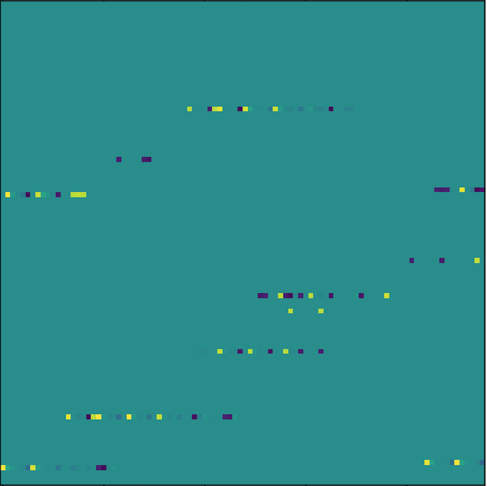
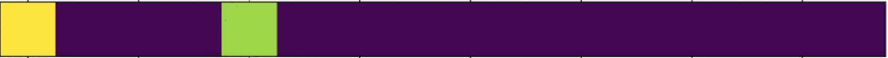
The difference between the first two activations in the "rotated 4" series, with lesser values zero'd. The left image corresponds to the 8 x 1152 "PrimaryCaps" layer, while the right image comes from the 16x1 "DigitCaps" layer.
Doing this for each pair of successive images yields a clear picture of which components are consistently activated as transformations take place. In theory, if we do indeed have a feature representing rotation, each progressive rotation step should show a significant activation there.
 The sequence of activation differences for the rotating 4.
The sequence of activation differences for the rotating 4.
The most evident components are in the rotation of the 4. The yellow pixels represent positive values for a component and dark blue represents negative. Teal is 0. The main activations for the rotation can be found in bands. What’s interesting is that each band’s components flip between dark blue and yellow depending on the orientation of the image. For example, during the cycle of the gif the band in the lower left corner will have dark blue pixels on the left along with yellow pixels on the right, and then yellow pixels on the left and blue pixels on the right when the image rotates 180˚. This mirroring behavior is evident in almost every active band for this transformation. These components of the capsule network are representing the rotation of the image.
 The sequence of activation differences for the shrinking 0.
The sequence of activation differences for the shrinking 0.
Another interesting thing we discovered is the row of neurons in the bottom left corner (0-22, 95) and are active in all of the transformations. Interpreting the exact meaning of the band is difficult because there are other components that are activated in every capsule layer. However, we can still glean meaning from trends within a transformation. For the 0 transformation, the band goes from negative on the left side to positive on the right side as the 0 shrinks. For the 4 stroke thickness, the activations move to the right on the band as the stroke gets thicker. For the 8 skew, the trend is the opposite, the activation skips to the left as the 8 is skewed. Another interesting point about the 8 skew activations is that this band is the only 1 of 4 bands that consistently appears in each transformation (the other two are (3-11, 50), (5-22, 38), and (60-70, 20). The 8 translation gif also displays some interesting patterns. In the (0-22, 95) band there is a checkered pattern that moves to the right as a unit as the 8 is translated. The other activation bands are fairly homogenous (either all positive components or all negative components).
 The sequence of activation differences for the moving 8.
The sequence of activation differences for the moving 8.
Overall, analyzing the capsule network shows that the layers are learning rich representations of the MNIST digits, and one which would not be expected from a purely convoutional network. These nuanced representations guide the discriminator's actions, and as we saw above, are passed on to the generator's representation through the backpropagation process.
Tools
The framework we used for this project was PyTorch. We debated using TensorFlow, but were all impressed by the flexibility and ease of use of PyTorch from the assignments, as well as its ability to easily print and manipulate tensor values. After doing a quick survey of DCGAN and CapsuleNet implementations in both, we decided there were sufficient examples using each framework, and settled on PyTorch. We ran our models on EC2 instances because of the extensive memory and time it takes preventing us from being able to feasibly train the models locally. On a p2.xlarge instance, training took approximately 10 hours.
Team Contributions
All of our team members contributed in large ways to this project, so we would assign each a 25% share.
The vast majority of our tasks were shared, but Kevin Jiao and Angelina Wang did much of the architectural troubleshooting and design. Angelina also calculated the GAM metrics. Franklin Rice and Pasha Minkovsky investigated the visualizations of the generative and discriminative representations, and put together the visual display of the blog. Kevin also experimented with "turning the knob" and wrote the code to make that possible, while Franklin ran the models and assembled the pieces.
Lessons Learned
There are many lessons we learned throughout the process of training these models. One big one that is well-known to be a major GAN problem is mode collapse. In some of the models we tried, depending on the seeding and initialization, we would end up with generative models that suffered from mode collapse, in that they would output the same image regardless of the input. We therefore came to the conclusion that the seeding and initialization with which we started each training model made a huge difference in terms of the quality of our models. Unfortunately, this randomness is something that is hard to control, but fortunately, it occured in only a fraction of our runs.
We also realized that deconvolutions sometimes caused a strange checkerboard effect that is apparent in the initial training epochs in many of our models. This is due to the dimensions in which our deconvolutions scaled up from the vector taken from the latent space; if the stride is not a factor of the kernel size, then the deconvolutions will overlap in such a way that certain neurons receive more input than others. However, it was interesting to note that, even when fully trained and appearing to work well, the DCGAN generator would still periodically map random inputs to a checkerboard image (see visualizations section), indicating a more pervasive underlying learning problem.
Above all, it was fascinating to see how using the capsule network in the discriminator impacted the representation of both sides of the network. In passing only gradients and classifications, the capsule discriminator was still able to help the generator learn a data distribution to which a DCGAN never would have arrived. For the MNIST family, that was enough to produce good looking numbers. But we are sure that there are other problems for which power of that representational nuance would be more notably expressed.